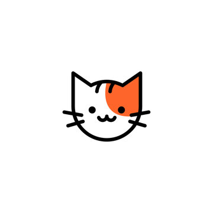

This is H1

This is paragraph. and it can make a line break.
This is h2
This is paragraph. and it can make a line break.
Terms for chickens include:
Biddy: a chicken, or a newly hatched chicken [1][2]
Capon: a castrated or neutered male chicken[a]
Chick: a young chicken[3]
Chook /tʃʊk/: a chicken (Australia/New Zealand, informal)[4]
Cock: a fertile adult male chicken[5][6]
Cockerel: a young male chicken[7]
Hen: an adult female chicken[8]
This is h3
This is paragraph. and it can make a line break.
This is h4
This is paragraph. and it can make a line break.
This is h5
this is unordered list
- animals
- chicken
- beef
- pork
- fish
this is ordered list
- animals
- chicken
- beef
- pork
- fish